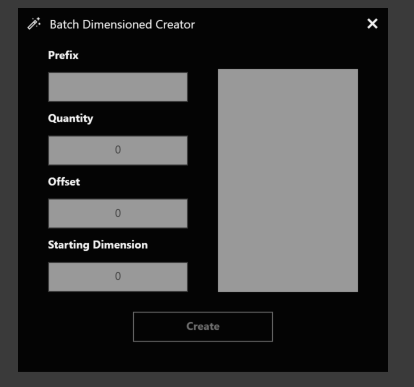
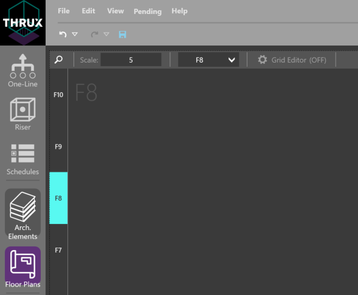
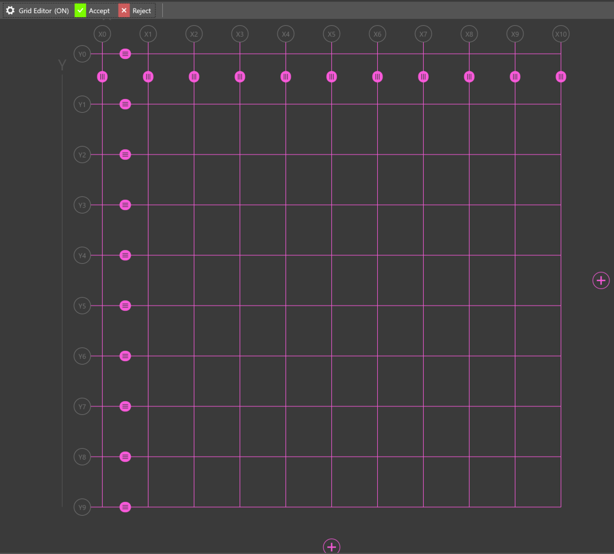
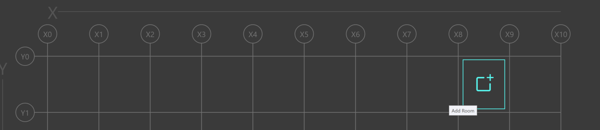
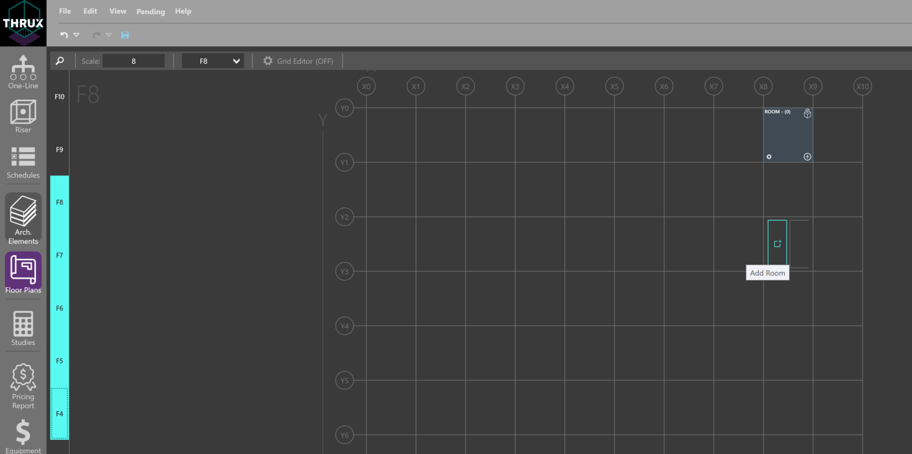
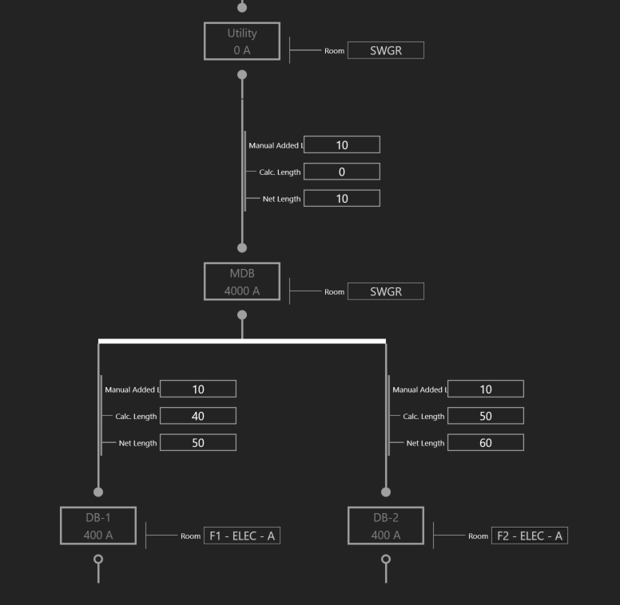
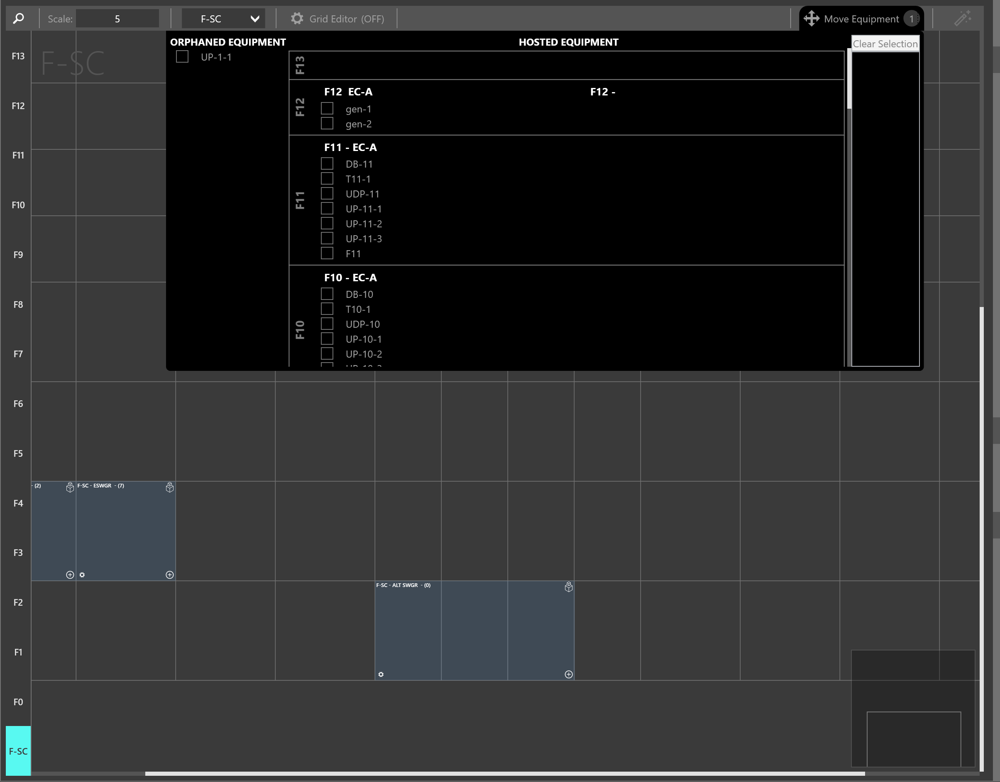
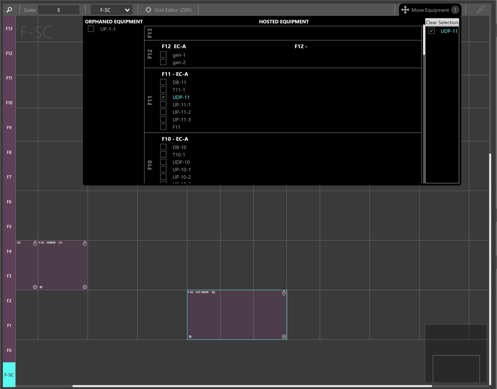
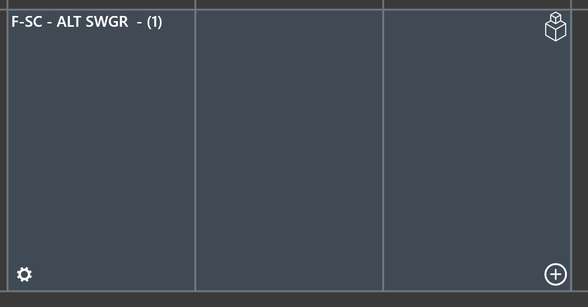

Setup Wizard¶
Use the Setup Wizard to create the columns and floors of your project.

You can create multiple columns and floors at a time by specifying a distance in between each. These can be individually modified in Architectural Elements.
Cycle through floors by selecting the floor on the left side bar.
Grid Editor¶
Use the Grid Editor to modify the spacing in between columns.
Creating Rooms¶
Once floors are created, create a room by hovering your mouse between column regions, and clicking Add Room.
To create a room in a common location spanning multiple floors, use Shift+Click to select multiple floors, and then hover over a grid region to click Add Room.
Risers¶
Risers are shafts or spaces which are designated for groups of pipes to route to and from distribution equipment.
Therefore, instead of routing directly from a distribution equipment to a load, the route can offset through a riser shaft before terminating at the load.
To create a Riser, in the Floor Plans workspace, select a group of floors which the riser will span. Use Shift+Click to multi-select. Then hover over a grid region, and select Add Riser. This can also be modified in Architectural Elements.

Moving Rooms / Risers¶
Once rooms or risers are created, move a room or riser by clicking and dragging it to the new region.

Conduit Lengths¶
Conduit lengths are determined by a starting location, and an ending location.

The Calculated Length, or orthogonal route, between two pieces of equipment is determined by their Room locations. A designer can modify the Manual Added Length to account for additional distance.
In addition, if the conduits are being routed through a riser shaft, assign a Riser to the terminating equipment.

Moving Equipment¶
Move Equipment is intended for designers to quickly place equipment in Rooms.
There are two collections of Equipment: Orphaned Equipment and Hosted Equipment. Orphaned Equipment do not have a Room assigned to them. Hosted Equipment are Rooms.
Select the Equipment you would like to move. Drag and drop it in a Room location.
The Room indicator will notify the designer when the equipment is added.
